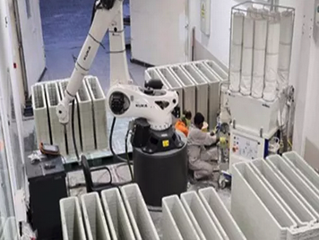

Economics #
Course Website
Readings/References#
Videos#
Tip
The code fragment below is inserted to left-justify tables.
%%html
<style>
table {margin-left: 0 !important;}
</style>
FE-Review-Economics 1.#
A company can manufacture a product using hand tools. Costs are \(\$1,000\) for the tools, and \(\$1.50\) manufacturing cost per unit. An alternative automated system is \(\$15,000\) for the machine, and \(\$0.50\) manufacturing cost per unit. The anticipated annual sales (the required production) is 5,000 units. What is the breakeven time in years for the automated system ignoring interest, versus using live humans?
A) 2.8
B) 3.6
C) 15.0
D) never
Solution (approach)
Compute cost to produce 5000 units per year by each method. Ratio of added investment to annual cost savings is payback time.
Manual production \(\$1.50*5000 = \$7,500\)
Machine production \(\$0.50*5000 = \$2,500\)
Annual savings \(\$7,500 - \$2,500 = \$5,000\)
Added investment \(\$15,000 - \$1,000 = \$14,000\)
Payback time \(\frac{\$14,000}{\$5,000/yr} = 2.8~\text{years}\)
Or compute cost to produce 5000 units per year by each method choose time when machine costs are less than human costs.
import matplotlib.pyplot as plt
# Given data
machine_cost = 15000
cpu_machine = 0.50
hand_tools = 1000
cpu_hand = 1.50
units = 5000
# Initialize cost lists for 15 years
annual_cost_machine = [0] * 15
accum_cost_machine = [0] * 15
annual_cost_hand = [0] * 15
accum_cost_hand = [0] * 15
years = [0] * 15
# Year 0 costs
annual_cost_machine[0] = machine_cost + cpu_machine * units
annual_cost_hand[0] = hand_tools + cpu_hand * units
accum_cost_machine[0] = annual_cost_machine[0]
accum_cost_hand[0] = annual_cost_hand[0]
# Compute costs for years 1 to 14
for year in range(1, 15):
annual_cost_machine[year] = cpu_machine * units
annual_cost_hand[year] = cpu_hand * units
accum_cost_machine[year] = accum_cost_machine[year - 1] + annual_cost_machine[year]
accum_cost_hand[year] = accum_cost_hand[year - 1] + annual_cost_hand[year]
# Print table with column labels
#print(f"{'Year':<5} {'Automated Cost':<15} {'Manual Cost'}")
for year in range(0, 15):
years[year]=year+1
# print(f"{year+1:<5} {accum_cost_machine[year]:<15.2f} {accum_cost_hand[year]:.2f}")
# Plot accumulated costs
plt.figure(figsize=(8, 6))
plt.plot(years, accum_cost_machine, marker='o', linestyle='-', label="Automated Cost")
plt.plot(years, accum_cost_hand, marker='s', linestyle='-', label="Manual Cost")
plt.xlabel("Year")
plt.ylabel("Accumulated Cost ($)")
plt.title("Accumulated Cost Over Time: Automated vs. Manual")
plt.legend()
plt.grid(True)
plt.show()
The cross over occurs between year 2 and 3, closer to 3 - choose A
FE-Review-Economics 2.#

The 3-D concrete printer costs \(\$90,000\) Its salvage value after 5 years is \(\$30,000\). Annual PMCS (Preventive Maintenance Checks and Services) is \(\$5000\). If the interest rate is \(8\%\), the equivalent uniform annual cost is most nearly
A) \(\$22,400\)
B) \(\$30,000\)
C) \(\$32,700\)
D) \(\$35,000\)
Solution (approach)
The formula to convert an initial cost (\(C_0\)) into an equivalent annualized cost stream (\(A\)) over \(n\) years at an interest rate \(r\) (expressed as a decimal) is based on the capital recovery factor:
\(A=C_0 \times \frac{r(1+r)^n}{(1+r)^{n}−1}\)
where,\(A\) = Equivalent annualized cost (constant annual payment)
\(C_0\) = Initial cost (one-time upfront investment)
\(r\) = Interest rate per period (decimal form, i.e., 5% → 0.05)
\(n\) = Number of years (or periods)
This formula is derived from the present worth to annuity conversion in financial mathematics, assuming payments are made at the end of each period.
Modification to consider salvage value and annual PMCS is obtained by discounting the salvage value to the present and subtracting its annuitized value then adding the annual PMCS (O&M) to obtain
\(A=C_0 \times \frac{r(1+r)^n}{(1+r)^{n}−1} - S \times \frac{r}{(1+r)^{n}−1} + O\)
where,\(A\) = Equivalent annualized cost (constant annual payment)
\(C_0\) = Initial cost (one-time upfront investment)
\(r\) = Interest rate per period (decimal form, i.e., 5% → 0.05)
\(n\) = Number of years (or periods)
\(S\) = Salvage value at the end of nn years
\(O\) = Annual operation & maintenance cost
A python script to illustrate the calculations is below
import numpy as np
def compute_annualized_cost(C0, r, n, S, O):
"""
Compute the annualized cost of an investment considering:
- Initial cost (C0)
- Interest rate (r)
- Number of years (n)
- Salvage value (S) at year n
- Annual operation & maintenance cost (O)
"""
# Convert interest rate to decimal if given as percentage
r = r / 100
# Capital recovery factor
CRF = (r * (1 + r)**n) / ((1 + r)**n - 1)
# Present worth factor for salvage value
PW_S = S * (r / ((1 + r)**n - 1))
# Annualized cost calculation
A = (C0 * CRF) - PW_S + O
return A
# Example Inputs
initial_cost = 90000 # Initial investment cost ($)
interest_rate = 8 # Interest rate (% per year)
years = 5 # Lifetime of the equipment (years)
salvage_value = 30000 # Expected resale or salvage value at year n ($)
annual_OandM = 5000 # Annual operation and maintenance cost ($)
# Compute annualized cost
annualized_cost = compute_annualized_cost(initial_cost, interest_rate, years, salvage_value, annual_OandM)
# Print result
print(f"Annualized Cost: ${annualized_cost:.2f} per year")
Annualized Cost: $22427.39 per year
The computed result is close to \(\$22,400\) - choose A